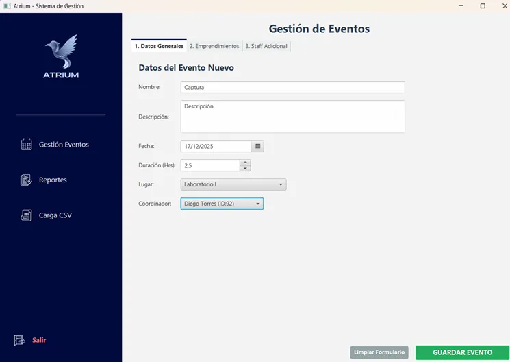

Finalizado
ATRIUM: Centro de Emprendimiento
Problema abordado
Organizar eventos, emprendimientos, mentorías y reportes de un centro académico sin depender de registros dispersos.
Solución desarrollada
Aplicación JavaFX conectada a PostgreSQL mediante JDBC, con carga masiva desde Excel y reportes exportables a PDF.
Mi aporte específico
Arquitectura Java, conexión con PostgreSQL y generación de PDFs para los reportes.
Resultado obtenido
Sistema académico funcional para consultar, registrar y reportar información del centro de emprendimiento.